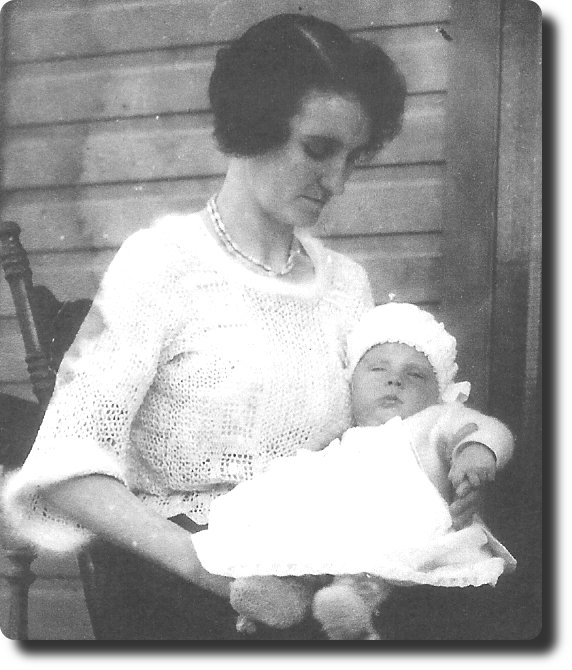
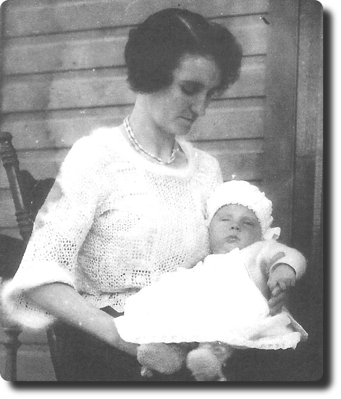

Louisa Smith ( 1900 - 1986 )  -->>
-->> 
 Louisa (Smith) Young, 1920s
Louisa (Smith) Young, 1951
-->>
 Louisa (Smith) Young, 1920s
-->>
Daughter of John Smith (who was born around 1880 in England) and Harriet Jane Lomas (who was born on 1878.09.01 in Great Bolton, Lancashire, England) and who were married on 1898.10.08 in Bolton, Lancashire, England
1900.06.06 Louisa was born in Greater Bolton, Lancashire, England at 34 Cannon Street ( Births Sep 1900, Smith Louisa, Bolton, v.8c, pg.516 )
| REGISTRATION DISTRICT Bolton | |||||||
| 1900 Birth in the Sub-district of Great Bolton in the County of Bolton | |||||||
| When and Where Born | Name if any | Sex | Father | Mother | Occupation of Father | Informant | When registered |
| Sixth June 1900, 34 Cannon Street | Louisa | Girl | John Smith | Harriet Jane Smith formerly Lomas | Labourer in Cotton Mill | H. J. Smith, Mother, 34 Cannon Street, Bolton | Fourteenth July 1900 |
1901.03.31 census: 61 Division St, Bolton, Lancashire
| 1901 UK Census, Civil Parish of Bolton, Eccles. Parish of St. Bartholomew | ||||||
| Residence: 61 Division St., Great Lever, Bolton, Lancashire | ||||||
| Last names | First names | Relation to Head | Condition as to Marriage | Age on Last Birthday | Occupation | Where Born |
| SMITH | JOHN | Head | M | 21 | Cotton Mill Labourer | Lancs Bolton |
| SMITH | HARRIET J | Wife | M | 22 | -- | Lancs Bolton |
| SMITH | LOUISA | Daur | -- | 9 ms | -- | Lancs Bolton |
1911.04.02 census: 61 Division St, Bolton, Lancashire
| 1911 England Census : 61 Division St, Bolton, Lancashire | |||||||||
| Name | Relation | Age Last Birthday |
Condition |
Years | Children born alive | Children still living | Children who have died | Occupation | Where Born |
| John Smith | Head | 31 | Married | 12 | 6 | 5 | 1 | Spinning Engine Driver, cotton spinning | Lancashire, Bolton |
| Harriet Jane Smith | Wife | 32 | Married | 12 | - | - | - | - | Lancashire, Bolton |
| Louisa Smith | Daughter | 10 | - | - | - | - | - | School | Lancashire, Bolton |
| Elizabeth Smith | Daughter | 8 | - | - | - | - | - | - | Lancashire, Bolton |
| William Smith | Son | 6 | - | - | - | - | - | - | Lancashire, Bolton |
| Alice Smith | Daughter | 4 | - | - | - | - | - | - | Lancashire, Bolton |
| John Smith | Son | 1 | - | - | - | - | - | - | Lancashire, Bolton |
1923.05 : Louisa sailed from Liverpool on the S.S. Montcalm (22 years old, a ring spinner, born in Bolton, in possesion of 10 pounds, passage paid by Mrs. J. Porritt, destination, a friend, Mrs. J. Porritt, 46 Bayfield Ave, Hamilton, Ontario. Nearest relative in England: Mrs. Smith, mother, 61 Division St., Great Lever, Bolton)
19?? Louisa was married, (still looking for documentation for this) to:
-->>
1884.07.01 William was born in England (date was taken from grave marker, no other proof of this birth date)
1955.05.07 William died in Kingston, Ontario, Canada
1926 : son Harry is born
1926 : Louisa and William were living at 40 John Street, Kingston (info from voter's list: William is a Loom fixer)
1927 : Louisa and William were living at 44 John Street, Kingston (info from City Directory 1927, Young William (Louisa); William, smash piecer Dominion Textile Company Limited - this was a cotton mill and is now known as The Woollen Mill)
1927 : son William is born
1928 : daughter Doris is born
1929 : Louisa and William were living at 38 John Street, Kingston (info from Kingston Voters' List for 1929) (info from City Directory for 1929: William, tender Dominion Textile Company Limited - this was a cotton mill and is now known as The Woollen Mill)
1930.07.04 : Louisa's sister Annie (15 years old) arrived in Canada (info from ship's passenger list: Arrived in Quebec on the Duchess of York, a settler with $4.00 in her pocket, going to work in the cotton mill, employer Mrs. Sands 29 1/2 John St., Kingston; sister in England: Elizabeth Walsh, 56 Leonard St. Great Lever, Bolton, Lancashire)
1930.10 : son Donald is born
1935 : Louisa and William were living at 170 Bagot Street, Kingston (info from voter's list: William and Louise)
1937 : Louisa and William were living at 170 Bagot Street, Kingston (info from City Directory, Young Wm (Louisa); Wm, jan Canadian Bank of Commerce (Princess and Bagot br))
1939 : Youngs are living at 170 Bagot Street, Kingston (info from City Directory: Young Wm jan Bank of Com h 170 Bagot)
1941 : Youngs are living at 170 Bagot Street, Kingston (info from City Directory: Young Harry asst clk C Livingston and Bro r 170 Bagot; Young Wm emp Jackson Press h 170 Bagot)
1943 : Louisa and William were living at 170 Bagot Street, Kingston (info from City Directory, Young Wm, watchmn Kingston Shipbldg h 170 Bagot)
1944.04 : Louisa's son Harry marries
1946 : Louisa and William were living at 170 Bagot Street, Kingston, ph 2-1911 (the City Directory doesn't specifically say Louisa or William; it does have: Wm J pressman The Jackson Press h 170 Bagot; Harry shipping dept A Davis and Son r 170 Bagot)
1946.12 : Louisa's daughter Doris marries
1948 : Louisa and William were living at 170 Bagot Street, Kingston, ph 2-1911 (info from City Directory, Young Wm h 170 Bagot; also at 170 Bagot were Young Wm J pressman Candn Register r 170 Bagot; Young Harry gardener r 170 Bagot)
1950 : Louisa and William were living at 170 Bagot Street, Kingston, ph 2-1911 (info from City Directory, it doesn't specifically say Louisa but has William ? - (get better copy); also at 170 Bagot were Donald emp Aluminum Co; William emp prsmn Candn Register; Harry emp gdnr)
1951 JUL : Louisa's son William marries
1954 : Louisa and William were living at 170 Bagot Street, Kingston (info from City Directory has Young Wm V (this is a mystery) h 170 Bagot; also at 170 Bagot were Young Donald emp ICI r 170 Bagot; Young Harry chef B A Hotel r 170 Bagot; Young Wm J pressmn Candn Register h 38 Clergy e)
1955 MAY 07 : Louisa's husband William died in Kingston, Ontario, Canada
1956 : Louisa (wid Wm) was living at 170 Bagot Street, Kingston (info from City Directory, also at 170 Bagot were Donald emp ICI; Harry emp chef B A Hotel; Wm J pressman Canadian Register h 38 Clergy e)
1958 : Louisa (wid Wm) was living at 480 Barrie Street, Kingston (info from City Directory, also at 480 Barrie was Donald R clk Loblaws. There is a Harry at 58 Queen St., Wm J pressmn at 38 Clergy e and Robt Baines estimator Dominion Iron Works res Point Pleasant)
1960 JUN : Louisa's son Donald marries
1960 : Louisa was living at 140 Hawthorne av (info from City Directory, Donald R clk Loblaws h 140 Hawthorne av, Harry h 1, 58 Queen, Wm printer Candn Register h 30 Nelson)
1986 NOV 04 : Louisa died in Kingston, Ontario, Canada at the age of 86
Harry (1926), William (1927), Doris (1928), Donald (1930)